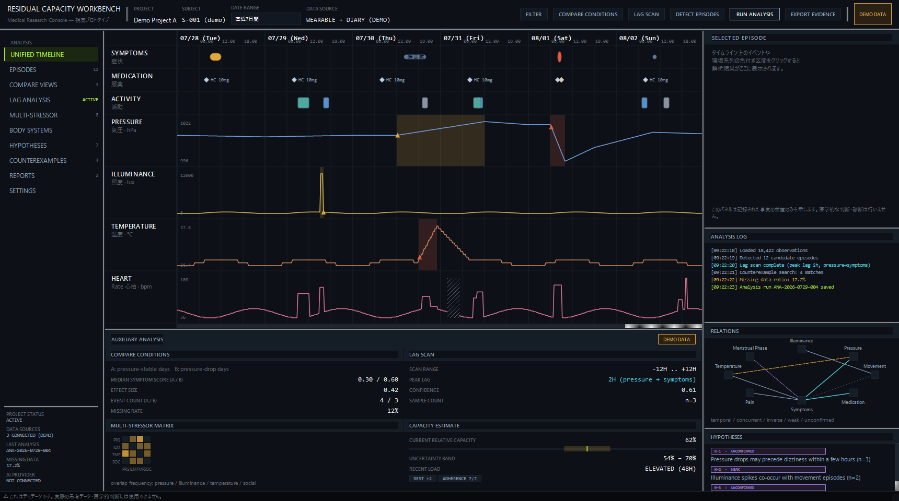
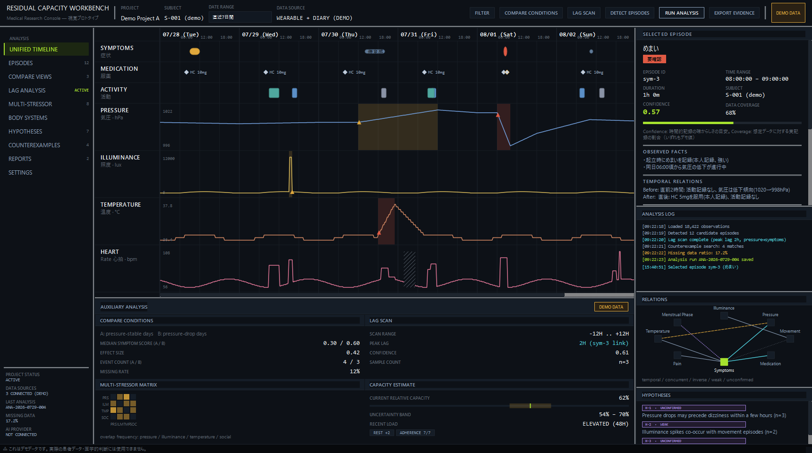
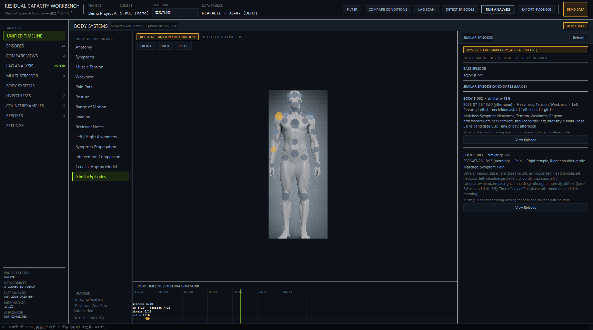
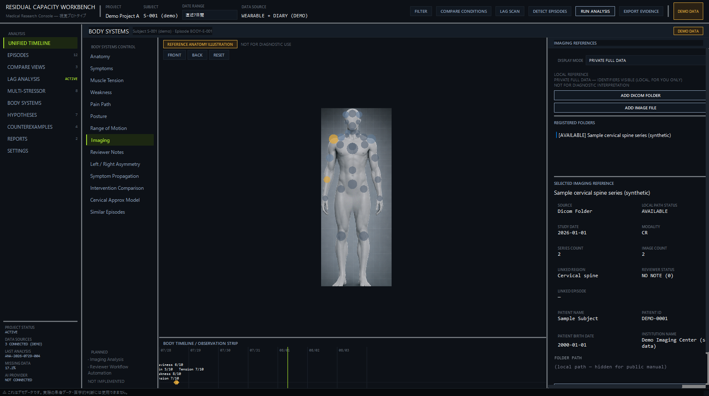
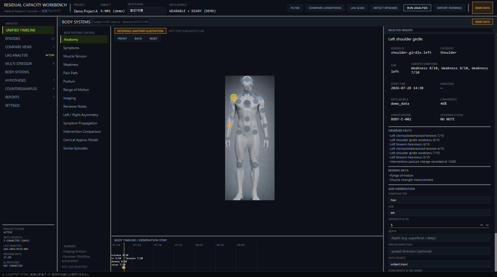
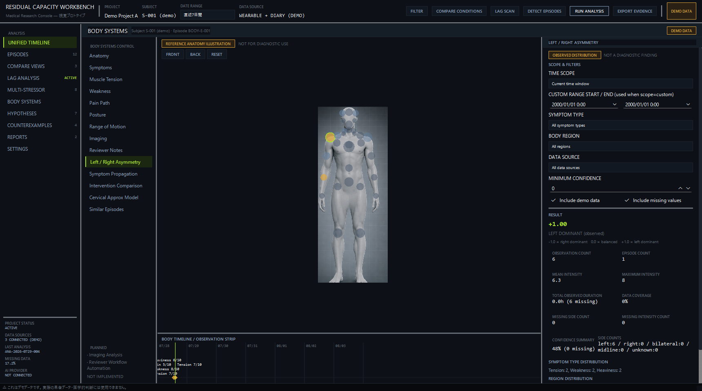
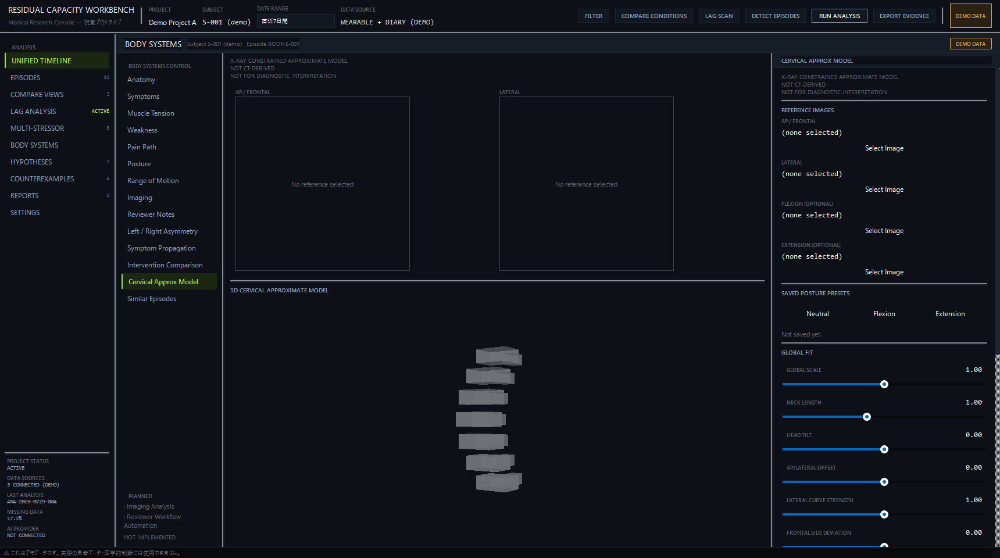

Residual Capacity Workbench（RCW）は、個人の観測データ（症状・服薬・活動の記録、気圧・照度・温度・心拍などの環境/生体系列、身体部位ごとの所見など）を時系列・部位別に並べて俯瞰するための、デスクトップ向けの視覚・操作感プロトタイプ です。研究用ワークベンチ （個人観測データの整理・比較・仮説検討のための試作環境）として位置づけています。
Prototype
AIなし（Not Connected）
Local data（SQLite）
Research workbench
01
このアプリの目的
画面は「Unified Timeline」（統合タイムライン）と「Body Systems」（身体部位別ビュー）の2つの独立したワークスペースで構成されています。現時点では本格的な統計解析・AI連携・実データの一括取り込みは行っておらず、画面上の一部は組み込みのデモ（架空）データで構成されています。どの部分が実データで計算されており、どの部分がデモ表示のみかは、本ページ「現在できること」「現在できないこと／未実装点」に区別して記載しています。
02
想定利用者
自分自身の観測データ（症状・服薬・活動・環境系列・身体部位ごとの所見など）を、時系列・部位別に整理・比較したい個人
複数の要因の時間的な近接関係を（因果と断定せずに）確認したいレビュアー・研究協力者
現時点では、複数患者を扱う臨床運用や、医療機関でのカルテ的利用は想定していません。
03
RCWは画面（ワークスペース）によって、入力できるデータの性質が異なります。
Unified Timeline
現時点では組み込みのデモデータのみを表示する画面です。症状・服薬・活動・メモのイベントと、気圧・照度・温度・心拍の時系列は、いずれもアプリ内にあらかじめ用意された架空のサンプルデータであり、ユーザーが新規のイベントや系列データを入力する機能は現時点ではありません。
Body Systems
身体部位ごとの観測記録、姿勢の所見、可動域、介入記録、症状の出現順序、レビュアーメモ、DICOMフォルダ・画像ファイルへの参照登録、頸椎近似モデルのパラメータをユーザーが実際に入力・保存できます（ローカルのSQLiteファイルに永続化）。
04
主要機能
Unified Timeline — 症状/服薬/活動/メモの記録と、気圧/照度/温度/心拍の時系列を共通の時間軸上に統合表示Body Systems: 3D身体図 + 症状オーバーレイ — 簡易人体モデル上で部位を選択し、記録済みの症状を確認・新規記録を追加Body Systems: Left / Right Asymmetry — 保存済み観測データから左右差を計算Body Systems: Symptom Propagation — 症状の出現順序の記録と、伝播候補の自動提示Body Systems: Intervention Comparison — 介入前後の観測データを比較Body Systems: Similar Episodes — 保存済みエピソード同士の類似度を観測事実に基づき計算Body Systems: Imaging References — DICOMフォルダ/画像ファイルへの参照登録・一覧・拡大表示（読み取り専用）Body Systems: Cervical Approx Model — レントゲン画像を参照した頸椎近似3Dモデルの手動フィッティングBody Systems: Posture / Range of Motion — 姿勢・可動域の記録と保存（本ページでは画面キャプチャは掲載していません）Body Systems: Reviewer Notes — レビュアーによる所見メモの下書き保存
05
画面ごとの説明
実装済みの7画面のスクリーンショットです。各画面に「現在の実装範囲」を明記しています。
7.1 / UNIFIED TIMELINE
メイン画面（Unified Timeline）
SCREEN 01 MAIN DASHBOARD

症状・服薬・活動・メモの4つのイベントレーンと、気圧・照度・温度・心拍の4つの時系列レーンを、共通の時間軸上に表示します。右側には選択中エピソードの詳細、解析ログ、関係グラフ、仮説一覧が表示されます。
表示内容は組み込みのデモデータです。上部の各操作ボタン（Filter / Compare Conditions / Lag Scan / Detect Episodes / Run Analysis / Export Evidence）は、現時点ではいずれも表示・ログ出力のみで、実際の絞り込み・計算処理は行いません。
7.2 / EVENT SELECTION
体調ログ（タイムラインのイベント選択表示）
SCREEN 02 EPISODE LOG

タイムライン上のイベント（症状・服薬・活動など）を選択すると、右側のSELECTED EPISODEパネルに、そのイベントの観測事実・時間的な前後関係・関連する要因の時間的近接・反例（counterexample）・欠測データなどが表示されます。
現時点では、Unified Timeline側に症状や服薬記録を新規入力するための専用フォームはなく、表示専用のデモイベント一覧です。
7.3 / BODY SYSTEMS
Similar Episodes
SCREEN 03 SIMILAR EPISODES

現在の実装範囲: 実装済み（試作段階）。選択中の基準エピソードと、保存済みの他のエピソードとの類似度を、症状の種類・身体部位・平均強度差・時間帯の一致・服薬タイミング差という5つの観測項目を重み付けして計算し、候補を一覧表示します。機械学習やAIによる推定ではなく、記録された値同士の単純な比較です。値が欠測している項目はスコアから除外され、残りの項目で再計算されます。画面上に明記されている通り「NOT A DIAGNOSTIC / MEDICAL SIMILARITY JUDGMENT」であり、医学的な類似性の判断ではありません。
今後の拡張候補: 未定。
7.4 / BODY SYSTEMS
Imaging Analysis（画像参照ビューア / Imaging References）
SCREEN 04 IMAGING REFERENCES

名称についての注記 このスクリーンショットのファイル名は「Imaging Analysis」ですが、実際に実装されている機能はDICOMフォルダ・画像ファイルの参照登録・一覧・拡大表示 （Imaging References / DICOM Image Gallery）です。画像から所見や診断を推定する「画像診断支援」としてのImaging Analysis機能は、現時点では未実装（PLANNED） です（画面左下のPLANNED欄にも明示）。両者は名称が似ていますが別機能である点にご注意ください。
現在の実装範囲: 実装済み（試作段階）。登録済みフォルダ・画像ファイルのメタデータ（種類・検査日・シリーズ数・画像数など）を読み取り専用で一覧・表示します。フォルダ・ファイルの中身は移動・編集・削除しません。識別情報（患者名・患者ID・生年月日・医療機関名）の表示モードとして、PRIVATE FULL DATA（既定。本人向けにすべて表示）とANONYMIZED VIEW（識別情報のみ画面上でREDACTED表示）を切り替えられます。匿名化は表示上のマスクのみで、保存データ自体は変更されません。外部送信・共有用の出力機能自体は未実装です。画面上には常に「NOT FOR DIAGNOSTIC INTERPRETATION」が明示されます。
本スクリーンショットに写っている患者名・患者ID・生年月日・医療機関名・画像は、本マニュアル作成のために生成した完全な架空のサンプルデータであり、実在の人物・医療機関の情報は含まれません。
今後の拡張候補: 外部共有・レポート出力・AI API送信等の実処理は未定（表示モードの土台のみ実装済み）。
7.5 / BODY SYSTEMS
身体図（3D Anatomy View）
SCREEN 05 BODY MAP

現在の実装範囲: 実装済み（試作段階）。簡易セグメント人体モデル（3D）上で身体部位をクリック選択し、記録済みの症状オーバーレイ（色・パターンで強度を表現）を確認します。選択した部位の観測記録一覧と、新規観測を追加するフォームが右側に表示されます（ローカルのSQLiteファイルに保存）。
画面上に「DEMO ANATOMY MODEL」「NOT FOR DIAGNOSTIC USE」が常設表示されます。実際の解剖学的モデルではなく、簡易的なセグメントモデルです。「身体図（Body Map）」は本ページ内での呼称であり、精密な医用画像や実測に基づく身体地図ではありません。
7.6 / BODY SYSTEMS
左右差解析（Left / Right Asymmetry）
SCREEN 06 ASYMMETRY ANALYSIS

現在の実装範囲: 実装済み（試作段階）。保存済みの観測データから、左右どちらの記録が優勢かを示す指標（-1.0〜+1.0）、観測件数、平均強度、データカバレッジなどを、その都度計算して表示します。期間・症状の種類・部位・データの由来・最小確信度でのフィルタが可能です。
画面上に「NOT A DIAGNOSTIC FINDING」が明示されます。記録の分布を示す集計であり、医学的判断ではありません。
7.7 / BODY SYSTEMS
Cervical Approx Model
SCREEN 07 CERVICAL APPROX MODEL

現在の実装範囲: 実装済み（試作段階）。標準的な7椎体の頸椎ブロックモデルを、AP（正面）/ Lateral（側面）のレントゲン画像を参照しながらスライダーで手動フィッティングする研究用プロトタイプです。Neutral / Flexion / Extensionの3つの姿勢プリセットをそれぞれ保存し、比較できます。
画面上に「X-RAY CONSTRAINED APPROXIMATE MODEL」「NOT CT-DERIVED」「NOT FOR DIAGNOSTIC INTERPRETATION」が常設表示されます。CT画像由来のモデルではなく、AIによる自動推定・形状最適化も行いません。
今後の拡張候補: 未定（AI自動再構成・形状最適化・AP/Lateral投影オーバーレイは現時点で計画のみで実装時期は未確定）。
06
現在できること
Unified Timelineで、症状/服薬/活動/メモとバイタル・環境系列を共通の時間軸上に俯瞰する（組み込みのデモデータ）
Body Systemsで、身体部位ごとの観測記録・姿勢記録・可動域記録・介入記録・症状の出現順序記録・レビュアーメモを入力し、ローカルのSQLiteファイルに保存する
保存済みの記録から、Left/Right Asymmetry・Symptom Propagation・Intervention Comparison・Similar Episodesを、その都度計算して表示する
DICOMフォルダ・画像ファイルを参照登録し、メタデータの一覧表示・画像の拡大表示を行う（読み取り専用、フォルダ・ファイルの中身は変更しない）
識別情報の表示をPRIVATE FULL DATA / ANONYMIZED VIEWで切り替える（表示層のみのマスク）
レントゲン画像を参照した頸椎近似3Dモデルの手動フィッティングと、姿勢プリセットの保存
07
現在できないこと／未実装点
Unified Timelineへの実データ入力・CSVインポート（現状は組み込みデモデータの表示のみ）
Unified Timeline上部の各操作ボタン（Filter / Compare Conditions / Lag Scan / Detect Episodes / Run Analysis / Export Evidence）の実処理（現状は表示・ログ出力のみ）
AI・外部APIとの連携（アプリ内に常時「AI PROVIDER: NOT CONNECTED」と表示される通り、外部AI API・ローカルLLM等への接続は一切実装していません）
画像から所見・診断を推定する「Imaging Analysis」（画像診断支援）機能（現時点ではPLANNED。実装済みの「Imaging References」とは別の未実装機能です）
Reviewer Workflow Automation（レビュアー運用フロー全体の自動化。現状は単発の下書き保存のみ）
外部共有・X投稿用画像生成・レポート出力・AI APIへのデータ送信の実処理（ANONYMIZED VIEWは表示モードの土台のみ）
Unified TimelineとBody Systems間の完全な双方向同期（現状は選択中の時刻情報のみを共有）
Unified Timeline側の既存イベント（服薬・活動・メモ）をInterventionへ自動的に参照・変換する仕組み
Symptom Propagationにおける、異なる症状種別をまたいだ「症状群としての伝播」の自動検出（現状は同一症状種別の組み合わせのみ）
Counterexampleの自動連携（現状は手動記述のみ）
Cervical Approx ModelのAI自動再構成・形状最適化、AP/Lateral投影オーバーレイ
本格的な統計解析（Unified Timelineの補助解析パネルの数値は組み込みのデモ集計値）
08
研究用ワークベンチとしての位置づけ
RCWは「記録アプリ」ではなく、個人観測データの整理・比較・仮説検討のための試作環境 （研究用ワークベンチ）として設計されています。すべての画面に共通する原則は次の通りです。
記録された時刻・値の並置のみを行い、因果関係の推定や医学的な原因の特定は行わない
時間的な近接を示す情報には、常に「因果関係を示すものではない」旨の注記を添える
一方向の説明だけでなく、それに反する記録（反例・counterexample）も併記する
confidence（確信度）・coverage（データカバレッジ）は、記録の確からしさ・網羅性の目安であり、診断確信度や統計的有意性を意味しない
未実装の機能は、実装済みであるかのような偽の数値・グラフを表示せず、PLANNED / NOT IMPLEMENTEDと明示する
Symptom Propagation・Intervention Comparisonなどの解析機能も、「観測された順序」「時間的な前後比較」であることを画面上に明示し、因果を主張しない
09
データとプライバシー上の注意
RCWはローカル（利用者自身のPC）で動作し、データはローカルのSQLiteファイル（body_systems.sqlite3）に保存されます。外部サーバー・クラウドへの自動送信は行いません。
現状、AI API等の外部サービスとの接続は一切ありません（アプリ内に常時「AI PROVIDER: NOT CONNECTED」と表示）。
Imaging Referencesで登録するのはDICOMフォルダ・画像ファイルへの「参照（パス・メタデータ）」のみであり、元データ自体を移動・編集・削除することはありません。
患者名・患者ID・生年月日・医療機関名などの識別情報は、既定でPRIVATE FULL DATA（本人向けの全表示）です。ANONYMIZED VIEWへ切り替えられますが、これは表示上のマスクであり、保存データ自体は変更されません。外部送信・エクスポート機能自体は現時点で未実装です。
本ページに掲載したスクリーンショット内の患者名・患者ID・生年月日・医療機関名・画像・ファイルパスは、本マニュアル作成のために生成した架空のサンプルデータ、または公開前に匿名化処理を行ったものであり、実在の人物・医療機関・実際のファイルシステム構成の情報は含まれません。
10
開発状況
現在も開発中の視覚・操作感プロトタイプです。
Unified Timeline、Body Systems（3D身体図・観測記録・Left/Right Asymmetry・Symptom Propagation・Intervention Comparison・Similar Episodes・Imaging References・DICOM Image Gallery・Cervical Approx Model・Posture・Range of Motion・Reviewer Notes）が、本ページ公開時点（2026-08-03）で実装され、動作を確認しています。
自動テストスイート（pytest）が整備されており、本ページ公開時点で268件のテストがすべて成功することを確認しています。
進捗率（％）は数値として算出・公表していません。